Don't Settle for a Good Walk. Go on a Great Walk!
No Bots, Just Boots on the Ground
It's difficult to imagine how many different landscapes there are in one country. On North Island, there are volcanoes, native rainforest bush, and mighty long rivers with steep valley sides. Then, the South Island takes us into beech forest territory, paradise beaches, secluded tussock lands, and majestic mountains.
Tramping just one of New Zealand's 11 Great Walks gives
a real feeling of serenity and achievement.
Tramping all 11,
well, you will have the ultimate experience
of New Zealand's backcountry (not to mention, prove you are the ultimate hiking machine!)
1. Kepler Track Hike
Hike the Glacier-Carved Landscapes of the South Island
Kicking off our list of NZ Great Walks is the Kepler Track. One of the Great Walks that traverses through the wild and expansive Fiordland National Park, the Kepler Track also easily earns its place in our 5 Incredible Multi-Day Hikes in the Fiordland National Park.Regardless of where it stands in our estimations, the walk is a circuit starting and ending just outside of Te Anau, boasting terrain from lakeshores, to tussock lands, and to mountaintops.
What's more, it's one of the rare Great Walks where you can get away with not having to book extra transport. Be sure to bring a torch (flashlight) to explore the limestone caves near the Luxmore Hut!
Distance: 60 km (37 mi), 3-4 days. Location: Te Anau, Fiordland National Park, South Island.
Distance: 60 km (37 mi), 3-4 days. Location: Te Anau, Fiordland National Park, South Island.
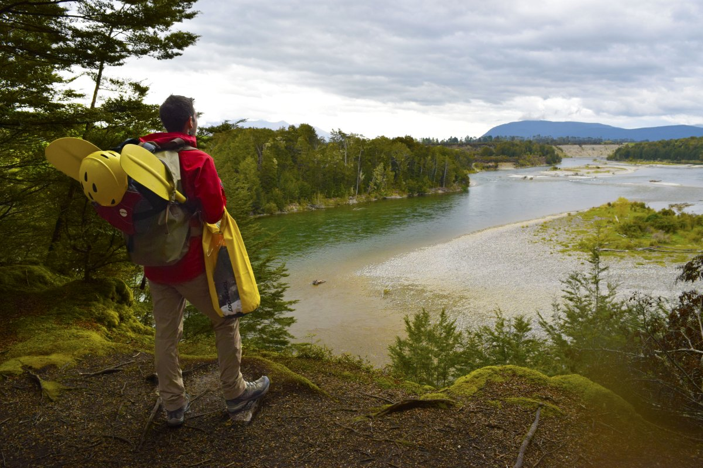
2. Tongariro Northern Circuit
North Island Great Walk into Volcano Country
In this volcano country, you walk past Mt Tongariro, Mt Ruapehu and Mt Ngauruhoe, a.k.a Mt Doom in The Lord of the Rings. The Tongariro Northern Circuit includes one of the most popular day walks in New Zealand: the Tongariro Crossing.This includes a magnificent view of the Emerald Lakes that fill the volcanic craters, while the lesser-visited Tama Lakes showcase a whole different view of the North Island's famous volcanoes.
In our experience, days of walking are short for most hiking the trail, so be prepared with a book or card games once you reach the hut on this popular North Island Great Walk.
Distance: 43 km (26.7 mi), 3-4 days. Location: Tongariro National Park Central North Island.
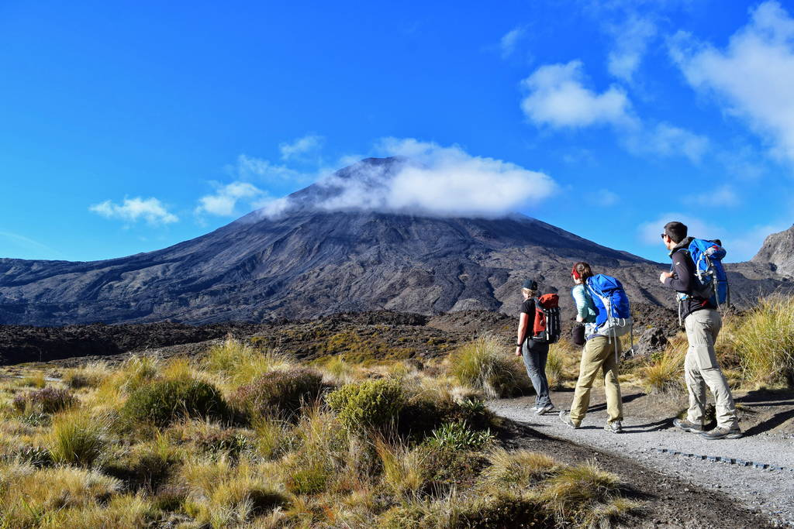
3. Lake Waikaremoana
The North Island's Remotest Great Walk
Walking the shoreline of Lake Waikaremoana will take you through a mass of rainforest, waterfalls and secluded beaches right in the heart of the North Island's largest tract of native forest, the Te Ureweras.It is a moderate-level walk full of culture and history. Note that the 4-5-day hike requires a water taxi to return you back to the start of the trail.
Access to the Great Walk is very remote, down a 90 km (56 mi) gravel road from Murupara or 58 km (36 mi) part gravel from Wairoa.
Distance: 46 km (28.6 mi), 4-5 days. Location: Between Wairoa and Murupara, Hawke's Bay, North Island.
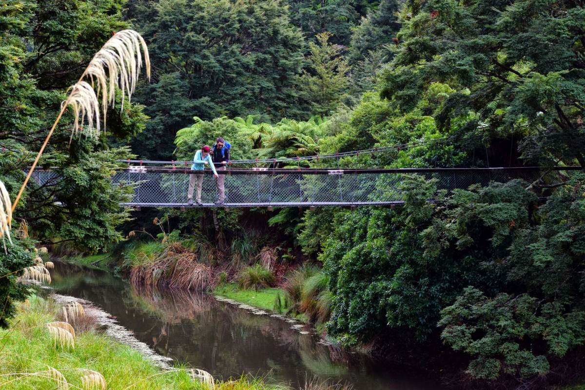
4. Whanganui Journey
The North Island Great Walk That isn't a “Walk”
The definition of “New Zealand Great Walks” is a bit twisted for this next entry. Not so much a walk, as this trip is done by canoe or kayak, the Whanganui Journey encapsulates steep valley walls and native forest standing on either side of the majestic Whanganui River.The canoe journey possesses a cultural experience, as one of the backcountry huts is a marae (Maori meeting house).
Distance: 145 km (90 mi), 3-5 days. Location: Between Taumarunui and Pipiriki, Whanganui National Park, North Island.
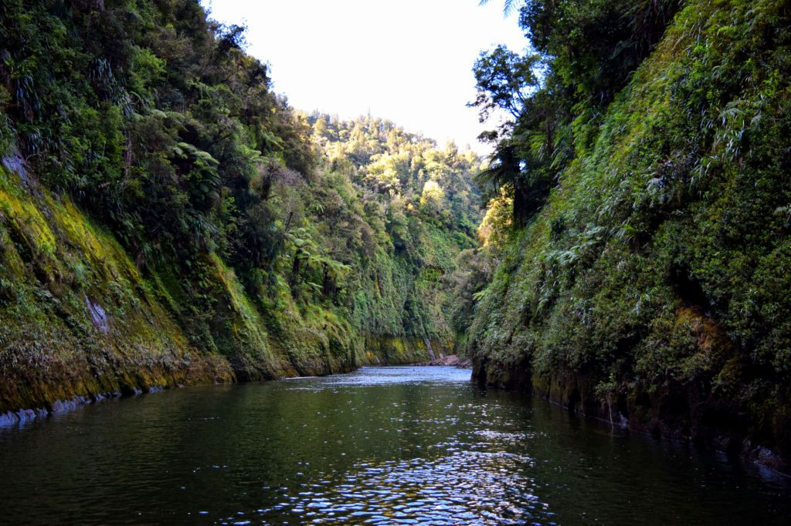
5. Abel Tasman Coast Track
Coastal Paradise at the Top of the South Island
One of the more easily accessible New Zealand Great Walks, the Abel Tasman Coast Track takes you through stretching golden sand beaches and native bush.You don't even have to make the whole journey on foot, as taking a water taxi and kayaking are also good ways to revel in coastal scenery. In fact, you will need to organise a water taxi to return to the start.
Although the Abel Tasman Coast Track has a reputation for being easier than the other Great Walks, that's not to say that there are a few climbs to coastal cliffs along the way, as we discovered on our last jaunt there.
Distance: 60 km (37 mi), 3-5 days. Location: Marahau to Tata Beach (Golden Bay), Abel Tasman National Park, South Island.
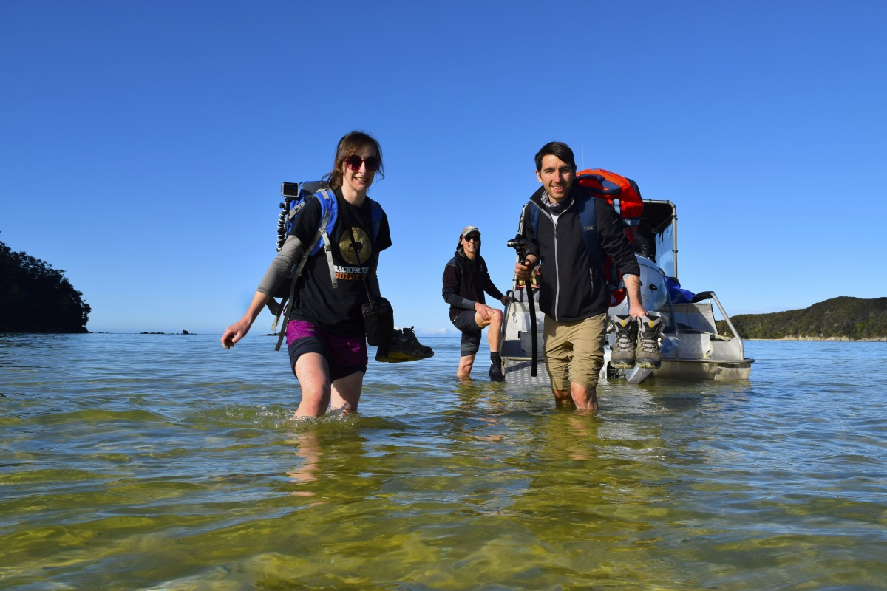
6. Heaphy Track
The Toughest New Zealand Great Walk
The Heaphy Track is where the forest meets the West Coast. Along the way, you'll walk over the Gouland Downs, dense rainforests, and the wild West Coast, which has some of the most enchanting scenery in the country.A whole bunch of native birds are likely to be spotted in this remote area, such as tui, weka, kea, kaka, kereru and, if you are super lucky, kiwi.
As the longest of the New Zealand Great Walks (that you actually do on foot), combined with limited options to cut the trail short and the mountainous terrain, the Heaphy Track is often considered the most challenging Great Walk.
Distance: 78.4 km (48.7 mi), 4-6 days. Location: Between Collingwood (Golden Bay) and Karamea, Kahurangi National Park, South Island.
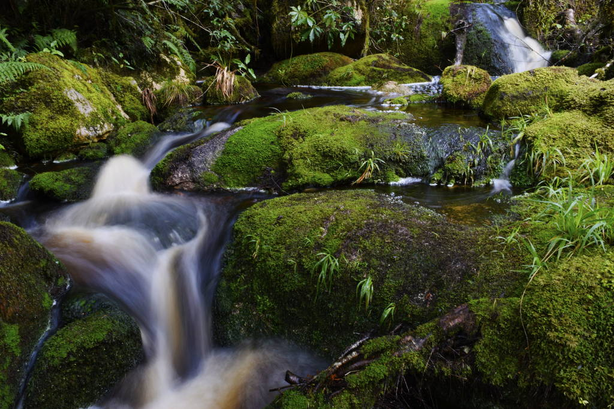
7. Milford Track
The South Island's Premium Great Walk
On this iconic New Zealand Great Walk, you will see an abundance of waterfalls, including the gargantuan Sutherland Falls, which is 580m (1,903ft) high.Walk along (and even cross) the rivers in pure green rainforests on this hike exclusively available for the Great Walks Season (late October to late April).
The Milford Track emerges into the famous and stunning fiord of Milford Sound, where boat transport will need to be arranged at the beginning and end of your hike.
Distance: 53.5 km (33 mi), 4 days. Location: Between Te Anau and Milford Sound, Fiordland National Park, South Island.
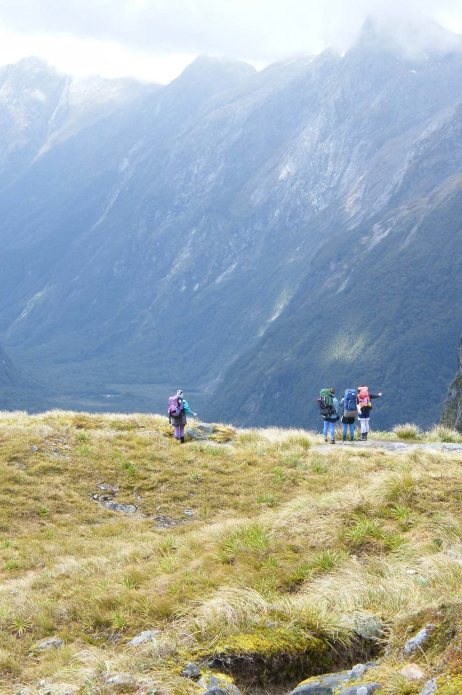
8. Routeburn Track
The Shortest (But No Less Stunning) Great Walk on the South Island
This walk through the mountains of the World Heritage Area of the Mt Aspiring National Park and into the Fiordland National Park gives you some of the best views of the glacier-carved valleys and majestic lakes of the South Island.Out of the three New Zealand Great Walks in the Fiordland National Park, the Routeburn Track spends less time in the forest and more time in the alpine environment. Yet, it's the shortest of the South Island Great Walks, enabling the fittest hikers to complete this Great Walk in just two days.
The Milford Track emerges into the famous and stunning fiord of Milford Sound, where boat transport will need to be arranged at the beginning and end of your hike.
Distance: 32 km (19.9 mi). 2-4 days. Location: Between Glenorchy and the Milford Sound Road, Mt Aspiring National Park, South Island.
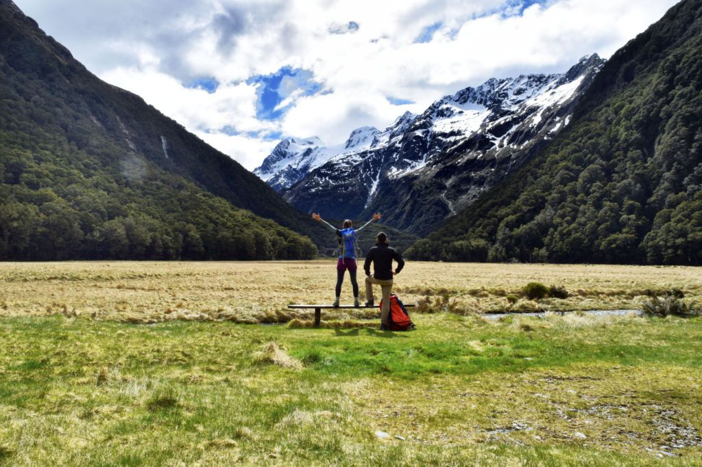
9. Rakiura Track
Stewart Island's Great Walk
The most southern Great Walk, the Rakiura Track is on the sub-Antarctic paradise of Stewart Island (Rakiura), yet it's only a short ferry ride away from the bottom of the South Island.Because the Rakiura National Park makes up 80% of the island, doing the Rakiura Track is the best way to really see Stewart Island. Hike along golden sand beaches and forests, but watch out for the mud. You never know; you might see or hear the island's native kiwi!
Distance: 32 km (19.9 mi), 3 days. Location: Stewart Island.
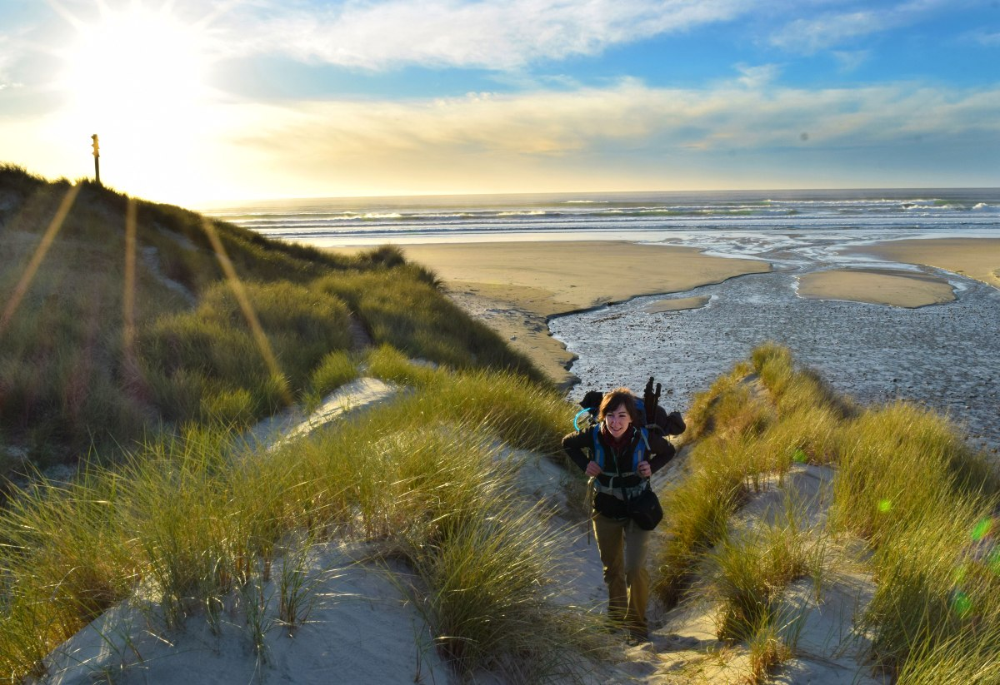
10. Hump Ridge Track
New Zealand's Most Luxurious Great Walk
New Zealand's newest Great Walk offers a touch of luxury in the stunning wilderness of Fiordland. The Hump Ridge Track traverses alpine environments with dramatic limestone tors, lush coastal forests, and expansive sandy beaches.History buffs will love exploring old timber settlements and crossing historic viaduct bridges, as well as walking on the longest tramway sleeper bridge in the southern hemisphere. As if the scenery wasn't enough, keep your eyes peeled for Hector's dolphins frolicking in the waters.
And if you're lucky, you might even catch a glimpse of the mesmerising southern lights, known as the aurora australis. What sets the Hump Ridge Track apart is its accommodation. Forget cramped DOC huts, you'll be staying in comfortable lodges with proper beds.
Distance: 60 km (37 mi), 3 days. Location: Tuatapere, Southland, South Island.
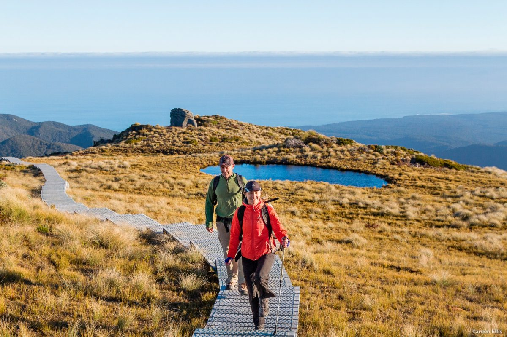
11. Paparoa Track
Hike or Mountain Bike This Great Walk
Rounding off our list of the NZ Great Walks is the Paparoa Track. Delve into the wilderness of the wild West Coast of New Zealand on the most recent addition to the New Zealand Great Walks.Wander among karst limestone landscapes amidst ancient forests and over the Paparoa Ranges for breathtaking views and encounters with interesting historical mining sites.
Distance: 45 km (28 mi), 2-3 days. Location: Between Punakaiki and Greymouth, Paparoa National Park, South Island.
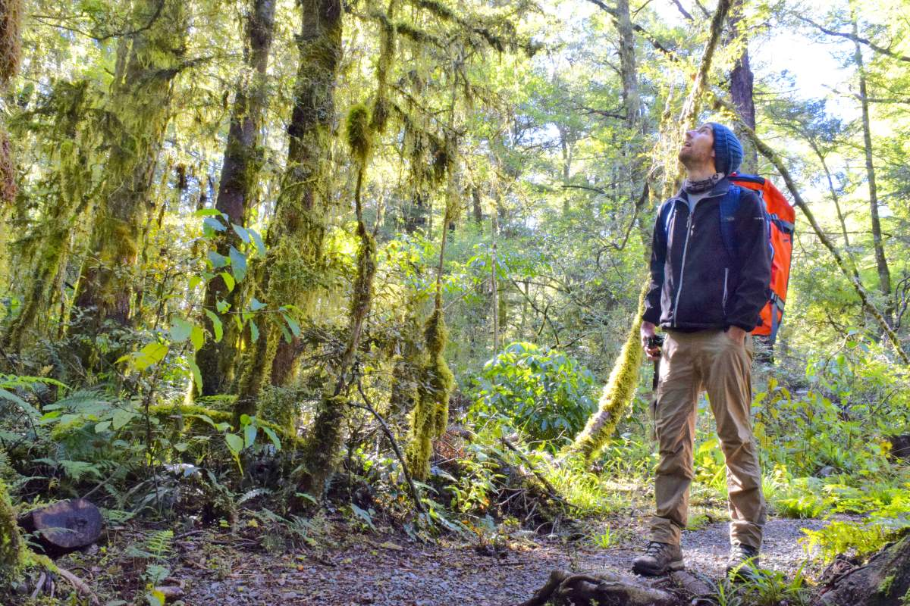